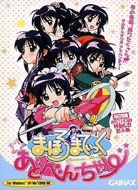

CD list¶
- まほろまてぃっく 音楽編1
- まほろまてぃっく CDどらまてぃっく★1
- まほろまてぃっく CDどらまてぃっく★★2
- まほろまてぃっく CDどらまてぃっく★★★3
- まほろまてぃっく 音楽編2
- アフタースクール after school
- とりおでいこう♪
- まほろまてぃっく ラジオDEどらまていっく
- まほろまてぃっく～もっと美しいもの～ 音楽編
- まほろまてぃっく～もっと美しいもの～ サウンドパーティ ―まほろ盤―
- まほろまてぃっく～もっと美しいもの～ サウンドパーティ ―みなわ盤―
- まほろまてぃっく～もっと美しいもの～ Sound Maiden
- まほろまてぃっく for 川澄綾子
- まほろまてぃっく☆あどべんちゃー 特典CD
- まほろまてぃっく まるち★とーきんぐ
- まほろまてぃっく ただいま◇おかえり 初回限定版 特典CD
- まほろまてぃっく ただいま◇おかえり 初回限定版 特典CD-ROM
- まほろまてぃっく Best Selection
- ハート撃ち抜きます
- 夢見るメイドさん
まほろまてぃっく 音楽編1¶
- PICA-1236 (通常版) / PICA-1246 (初回限定版)
- 2001/11/22
- [歌] かえりみち 歌：川澄綾子
- [曲] アイキャッチ
- [曲] ヴェスパーの偉大なる戦士
- [曲] はい、それが私です
- [曲] 美里優・中学生・一人暮らし
- [曲] メイドさんがやって来た
- [曲] 母のぬくもり
- [曲] 最後の願い
- [曲] トラブル発生！
- [曲] ホッと一息
- [曲] 2年4組のみなさん
- [曲] 女教師式条沙織（25歳）
- [曲] 式条のエロエロ・パート１（昼の部）
- [曲] えっちなのはいけないと思います！
- [曲] 式条のエロエロ・パート２（夜の部）
- [曲] 調教美獣 VS つるぺたメイド・果てしなき戦い
- [曲] 騒！騒！騒！
- [曲] あんの小娘がっ！千切れ飛ぶかと…
- [曲] 縁側にて
- [曲] 最後の願い（バリエーション）
- [曲] 悲しみは戦場の彼方に
- [曲] あやまちの記憶
- [曲] 紫陽花の咲く庭で（Instrumental）
- [曲] 残された時間
- [歌] まほろDEまんぼー 歌：とりおまてぃっく（菊池由美、水野愛日、真田アサミ）
- [曲] かえりみち（オリジナル・カラオケ）
- [曲] まほろDEまんぼー（オリジナル・カラオケ）
- [語] まほろさん、目覚ましコール
- [語] まほろさん、おやすみ癒しコール おまけメッセージ
- [語] まほろさん、留守電コール おまけメッセージ
- [語] まほろさん、カップラーメンタイマー おまけメッセージ
- [語] 「えっちなのはいけないと思います」五段階活用 おまけメッセージ

{kind=link}
まほろまてぃっく CDどらまてぃっく★★2¶
{kind=link}
- PICA-0013
- 2001/12/21
- [歌] てんこもりLOVE天国 歌：とりおまてぃっく（菊池由美、水野愛日、真田アサミ）
- [語] まほろまてぃっく まろまろま日記・その2「さくら湯へ行こう!!」
- [歌] 脇・スポットライト 歌：さぶ★キャラッツ（荻原秀樹、私市淳）
- [語] こんなおはなしはいけないと思います・その2「カプセル IN まほろまてぃっく」
- [語] キャラクターメッセージ
- [曲] てんこもりLOVE天国（オリジナル・カラオケ）
- [曲] 脇・スポットライト（オリジナル・カラオケ）
まほろまてぃっく CDどらまてぃっく★★★3¶
{kind=link}
- PICA-0014
- 2001/12/21
- [歌] ぽん・ふわ・しゅっしゅ 歌：川澄綾子
- [語] まほろまてぃっく まろまろま日記・その3「Happy Birthday 優!!」
- [歌] カン治外法権 ～アタシ流～ 歌：高田由美
- [語] こんなおはなしはいけないと思います・その3「えっちなのはいいと思います」
- [語] キャラクターメッセージ
- [曲] ぽん・ふわ・しゅっしゅ（オリジナル・カラオケ）
- [曲] カン治外法権 ～アタシ流～（オリジナル・カラオケ）
まほろまてぃっく 音楽編2¶

- PICA-1237
- 2002/2/22
- [曲] WARNING!
- [曲] 目が…見えない！
- [曲] 恐怖と戦慄の一夜
- [曲] 緋立第四中学の九不思議を検証せよ！
- [曲] 「赤毛の安藤さん」
- [曲] サポートメカ:V1046R9-SLASH ZERO
- [曲] 流河先生登場
- [曲] リューガVSまほろ&スラッシュ
- [曲] 疑惑
- [曲] 確信、そして忠告。
- [曲] そうだ、木に登ろう…。
- [曲] 宿命の対峙 Part.1
- [曲] 宿命の対峙 Part.2
- [歌] まあるいお月さま 歌：川澄綾子
- [歌] メイドさんって素敵です 歌：川澄綾子
- [歌] 紫陽花の咲く庭で 歌：川澄綾子
CDドラマ まほろまていっく～Automatic Maiden～外伝 第5章「今日も元気なメイドさん」第3.5話「大晦日大掃除大勝負」
- [語] 第一幕
- [語] 第ニ幕
- [語] 第三幕
- [語] 第四幕
- [語] 閉幕
アフタースクール after school¶
{kind=link}
- By とりおまてぃっく
- PICA-0017
- 2002/4/1
- [歌] アフタースクール after school
- [歌] いち、にの、さんっ、Peace!
- [語] とりおまてぃっくデビューおめでとうメッセージ
- [曲] アフタースクール after school（オリジナル・カラオケ）
- [曲] いち、にの、さんっ、Peace!（オリジナル・カラオケ）
- [歌] まほろDEまんぼー（ウキウキ Hip-Hop Version）
- [歌] まほろDEまんぼー（TVサイズ）
All songs: 歌：とりおまてぃっく（菊池由美、水野愛日、真田アサミ）
とりおでいこう♪¶

- By とりおまてぃっく
- PICA-1256
- 2002/9/6
- [歌] 茶の間でチャチャチャ
- [歌] ワンダフルにスペシャルでビューティフル！ 歌：等々力凛（水野愛日）
- [歌] アフタースクール after school
- [歌] 「長」のつく女 歌：佐倉深雪（菊地由美）
- [歌] 友情＜愛情（ゆうじょうよりあいじょう）
- [歌] 食べちゃいたいの 歌：大江千鶴子（真田アサミ）
- [歌] てんこもりLOVE天国
- [歌] 声をそろえて…
- [歌] まほろDEまんぼー
All unmarked songs: 歌：とりおまてぃっく（菊池由美、水野愛日、真田アサミ）
まほろまてぃっく ラジオDEどらまていっく¶
{kind=link}
- PICA-1257
- 2002/9/26
Disc1:
- [歌] まほろDEまんぼー（ウキウキ Hip-Hop Version） 歌：とりおまてぃっく（菊池由美、水野愛日、真田アサミ）
- [語] 第1話 またまた過去に追われるメイドさん
- [語] 第2話 シャーマンクッキング
- [語] 第3話 とりおまてぃっくすぱいらる
- [語] 第4話 となりのトロロ
- [語] 第5話 むにゃしひべ
- [語] 第6話 今、君が燃え尽きるとき
- [語] 第7話 緋立悶絶川下り!!
- [語] 第8話 スラッシュの独白
- [語] 第9話 はまぢ式、試験必勝法!?
- [語] 第10話 カラオケあるある大辞典
- [語] 第11話 優、ただいま増殖中!?
- [歌] アフタースクール after school（Short Version） 歌：とりおまてぃっく（菊池由美、水野愛日、真田アサミ）
Disc2:
- [語] 第12話 まほろまてぃっく～もっと美しいもの～前夜祭
- [歌] そ・れ・い・ゆ（TV SIZE） 歌：川澄綾子
まほろまてぃっく～もっと美しいもの～ 音楽編¶

- PICA-1258 (通常版) / PICA-1259 (初回限定版)
- 2002/12/6
- [歌] そ・れ・い・ゆ 歌：川澄綾子
- [曲] 妹ができました。
- [曲] よろしくお願いします。
- [曲] はじめてのことばかりで …
- [曲] ごめんなさい
- [曲] CODE #370
- [曲] レギュラー陣も健在!?
- [曲] 管理者 (THE KEEPER)
- [曲] もっと美しいもの…
- [曲] For The New Generation Part.1
- [曲] For The New Generation Part.2
- [曲] For The New Generation Part.3
- [曲] For The New Generation Part.4
- [曲] So Long ～
- [歌] とりおまてぃっく ラン らん 乱♪ 歌：とりおまてぃっく（菊池由美、水野愛日、真田アサミ）
- [曲] そ・れ・い・ゆ（オリジナル・カラオケ）
- [曲] とりおまてぃっく ラン らん 乱♪（オリジナル・カラオケ）
- [語] みなわちゃん～もっとききたいもの～ おまけメッセージ
- [語] みなわちゃん～もっとききたいもの～ おまけメッセージ
- [語] みなわちゃん～もっとききたいもの～ おまけメッセージ
- [語] みなわちゃん～もっとききたいもの～ おまけメッセージ
- [語] みなわちゃん～もっとききたいもの～ おまけメッセージ
- [語] みなわちゃん～もっとききたいもの～ おまけメッセージ
- [語] みなわちゃん～もっとききたいもの～ おまけメッセージ
- [語] みなわちゃん～もっとききたいもの～ おまけメッセージ
- [語] みなわちゃん～もっとききたいもの～ おまけメッセージ
- [語] みなわちゃん～もっとききたいもの～ おまけメッセージ
- [語] みなわちゃん～もっとききたいもの～ おまけメッセージ
- [語] みなわちゃん～もっとききたいもの～ おまけメッセージ
- [語] みなわちゃん～もっとききたいもの～ おまけメッセージ
- [語] みなわちゃん～もっとききたいもの～ おまけメッセージ
- [語] みなわちゃん～もっとききたいもの～ おまけメッセージ
- [語] みなわちゃん～もっとききたいもの～ おまけメッセージ
- [語] みなわちゃん～もっとききたいもの～ おまけメッセージ
- [語] みなわちゃん～もっとききたいもの～ おまけメッセージ
- [語] みなわちゃん～もっとききたいもの～ おまけメッセージ
- [語] みなわちゃん～もっとききたいもの～ おまけメッセージ
- [語] みなわちゃん～もっとききたいもの～ おまけメッセージ
まほろまてぃっく～もっと美しいもの～ サウンドパーティ ―まほろ盤―¶
{kind=link}
- PICA-0021
- 2002/12/21
- [歌] ぐっとモーニング 歌：まほろ（川澄綾子）
- [歌] 思春期なんてトホホのHo 歌：美里優（瀧本富士子）
- [歌] 今日はわたしが起こしてア・ゲ・ル 歌：とりおまてぃっく（菊池由美、水野愛日、真田アサミ）
- [語] サウンドパーティ～もっと聞きたいもの～「歓迎！美里家ご一行様・Sideまほろさん」
- [曲] ぐっとモーニング（オリジナル・カラオケ）
- [曲] 思春期なんてトホホのHo（オリジナル・カラオケ）
- [曲] 今日はわたしが起こしてア・ゲ・ル（オリジナル・カラオケ）
まほろまてぃっく～もっと美しいもの～ サウンドパーティ ―みなわ盤―¶
{kind=link}
- PICA-0022
- 2002/12/21
- [歌] よいもの 歌：みなわ（清水愛）
- [歌] 純情可憐オホホのHo！ 歌：式条沙織（高田由美）
- [歌] 友よ、オレの胸で眠れ ～タキシードは夜の保護色～ さぶ★キャラッツ（荻原秀樹、私市淳）
- [語] サウンドパーティ～もっと聞きたいもの～「歓迎！美里家ご一行様・Sideみなわちゃん」
- [曲] よいもの（オリジナル・カラオケ）
- [曲] 純情可憐オホホのHo！（オリジナル・カラオケ）
- [曲] 友よ、オレの胸で眠れ ～タキシードは夜の保護色～（オリジナル・カラオケ）
まほろまてぃっく～もっと美しいもの～ Sound Maiden¶
{kind=link}
- PICA-1260
- 2003/3/26
- [歌] お茶にしましょう 歌：まほろ&優（川澄綾子&瀧本富士子）
- [歌] いっしょだから 歌：まほろ&みなわ（川澄綾子&清水愛）
- [歌] 「ありがとう」 歌：まほろ（川澄綾子）
- [語] まほろまてぃっく～もっと美しいもの～プラスワン「時をかけるメイドさん…というか優さん？」
- [曲] お茶にしましょう（オリジナル・カラオケ）
- [曲] いっしょだから（オリジナル・カラオケ）
- [曲] 「ありがとう」（オリジナル・カラオケ）
- [曲] メイドさんって素敵です（オリジナル・カラオケ）
- [曲] メイドのココロ（オリジナル・カラオケ）
- [曲] ぽん・ふわ・しゅっしゅ（オリジナル・カラオケ）
- [曲] まあるいお月さま（オリジナル・カラオケ）
- [曲] ぐっとモーニング（オリジナル・カラオケ）
まほろまてぃっく for 川澄綾子¶
{kind=link}
- By 川澄綾子
- PICA-1261
- 2003/3/26
- [歌] そ・れ・い・ゆ
- [歌] メイドさんって素敵です
- [歌] ぐっとモーニング
- [歌] メイドのココロ
- [歌] 紫陽花の咲く庭で
- [歌] 告白。
- [歌] 濃縮還元 まほろ
- [歌] ぽん・ふわ・しゅっしゅ
- [歌] まあるいお月さま
- [歌] わたしのしあわせ
- [歌] かえりみち
All songs: 歌：川澄綾子
まほろまてぃっく☆あどべんちゃー 特典CD¶
{kind=link}
(※Game cover)
- 品番不明
- 2003/7/15
- [語] オープニング
- [語] ミニドラマ
- [語] サテライト・ポエム〜マジカル☆メイドまほろさん
- [語] サテライト・ポエム〜美里優
- [語] サテライト・ポエム〜田中佳美
- [語] サテライト・ポエム〜くの一まほろ 大和撫子七変化
- [語] エンディング
まほろまてぃっく まるち★とーきんぐ¶
{kind=link}
- PICA-1282
- 2003/9/26
- [語] 映画館
- [語] スラッシュ
- [語] 美里優
- [語] 川原清巳
- [語] 大江千鶴子
- [語] 佐倉深雪
- [語] 等々力凛
- [語] 安藤みなわ・浜口俊也・式条沙織
- [語] えっちなのは…
- [語] まほろさん
- [歌] 緋立娘HA! 伊達音頭 歌：とりおまてぃっく and みなわ（菊地由美、水野愛日、真田アサミ and 清水愛）
- [曲] 緋立娘HA! 伊達音頭（オリジナル・カラオケ）
- [曲] シルヴァプラナ まほろまてぃっく～もっと美しいもの～ extra sound tracks
- [曲] in a bar まほろまてぃっく～もっと美しいもの～ extra sound tracks
- [曲] 激突！ まほろまてぃっく～もっと美しいもの～ extra sound tracks
- [曲] So Long ～ もっと美しいもの まほろまてぃっく～もっと美しいもの～ extra sound tracks
{kind=link}
まほろまてぃっく ただいま◇おかえり 初回限定版 特典CD-ROM¶
- GNBA-164003
- 2009/12/23
- [語] RADIOまほろまてぃっく～おかえりなさい、まほろさん#01
- [語] RADIOまほろまてぃっく～おかえりなさい、まほろさん#02
- [語] RADIOまほろまてぃっく～おかえりなさい、まほろさん#03
- [語] RADIOまほろまてぃっく～おかえりなさい、まほろさん#04
- [語] RADIOまほろまてぃっく～おかえりなさい、まほろさん#05
- [語] RADIOまほろまてぃっく～おかえりなさい、まほろさん#06
- [語] RADIOまほろまてぃっく～おかえりなさい、まほろさん#07
- [語] RADIOまほろまてぃっく～おかえりなさい、まほろさん#08
まほろまてぃっく Best Selection¶
{kind=link}
- GNCA-1240
- 2009/12/23
Disc1:
- [歌] かえりみち 歌：まほろ（川澄綾子）
- [歌] まほろDEまんぼー 歌：とりおまてぃっく（菊池由美、水野愛日、真田アサミ）
- [歌] そ・れ・い・ゆ 歌：まほろ（川澄綾子）
- [歌] とりおまてぃっく ラン らん 乱♪ 歌：とりおまてぃっく with みなわ（菊地由美、水野愛日、真田アサミ with 清水愛）
- [歌] 緋立娘HA! 伊達音頭 歌：とりおまてぃっく and みなわ（菊地由美、水野愛日、真田アサミ and 清水愛）
- [歌] ただいまの風 歌：まほろ（川澄綾子）
- [歌] 【ま】のつくブギ！ 歌：とりおまていっく（菊地由美、水野愛日、真田アサミ）&みなわ（清水愛）&まほろ（川澄綾子）
Disc2:
- [語] メイドのココロ 歌：まほろ（川澄綾子）
- [語] ぽん・ふわ・しゅっしゅ 歌：まほろ（川澄綾子）
- [語] 茶の間でチャチャチャ 歌：とりおまてぃっく（菊池由美、水野愛日、真田アサミ）
- [語] ワンダフルにスペシャルでビューティフル！ 歌：等々力凛（水野愛日）
- [語] 「長」のつく女 歌：佐倉深雪（菊地由美）
- [歌] 食べちゃいたいの 歌：大江千鶴子（真田アサミ）
- [歌] アフタースクール after school 歌：とりおまてぃっく（菊池由美、水野愛日、真田アサミ）
- [歌] 思春期なんてトホホのHo 歌：美里優（瀧本富士子）
- [歌] 脇・スポットライト 歌：さぶ★キャラッツ（荻原秀樹、私市淳）
- [歌] 純情可憐オホホのHo！ 歌：式条沙織（高田由美）
- [歌] よいもの 歌：みなわ（清水愛）
- [歌] お茶にしましょう 歌：まほろ&優（川澄綾子&瀧本富士子）
- [歌] いっしょだから 歌：まほろ&みなわ（川澄綾子&清水愛）
- [歌] メイドさんって素敵です 歌：まほろ（川澄綾子）
- [歌] 紫陽花の咲く庭で 歌：まほろ（川澄綾子）
- [歌] まあるいお月さま 歌：まほろ（川澄綾子）
ハート撃ち抜きます¶

- 同人 By Atelier Saffron (アトリエサフラン/主催: 秋川みかぜ)
- 2001/08/10 (C60)
- [歌] Shining of the Dark ～輝ける闇～ 歌：さぼさぬけ・水鶏・紫堂貴美
- [歌] 風吹く街 歌：高橋華南
- [歌] Automatic Maiden 歌：ゆうの
- [曲] Shining of the Dark ～輝ける闇～ (Off Vocal Version)
- [曲] 風吹く街 (Off Vocal Version)
- [曲] Automatic Maiden (Off Vocal Version)
{kind=link}